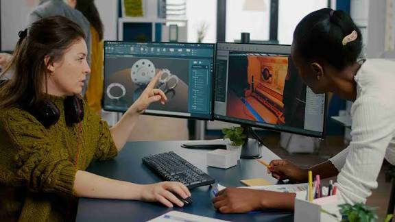
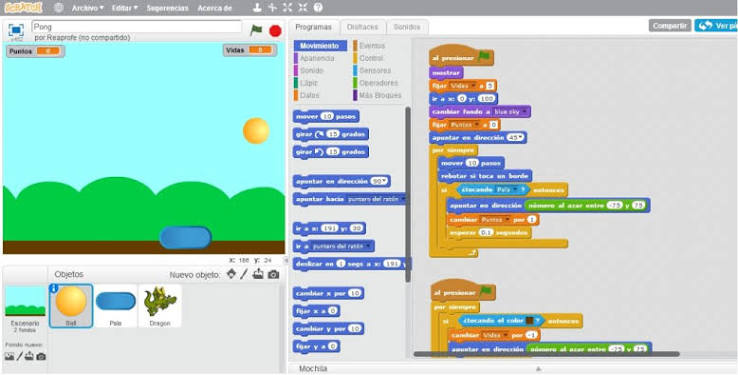
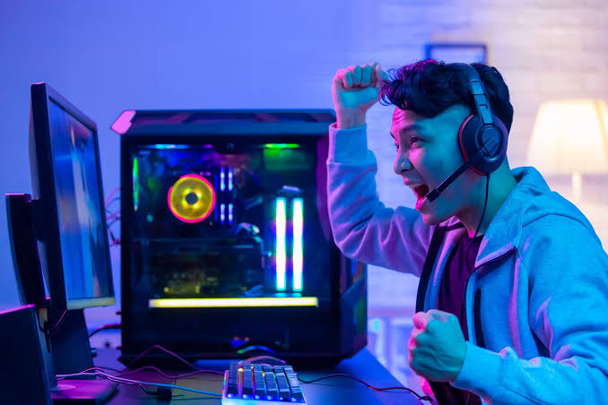
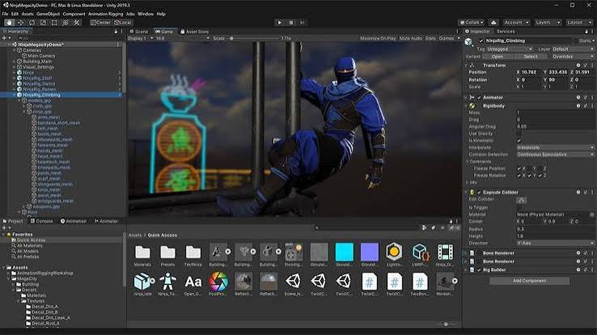

Ideales para aprender las bases de la lógica, la física 2D y la detección de colisiones:
• Clásicos reinventados: Versiones propias de juegos como Pong, Tetris, Space Invaders o Breakout.
• Juegos de corredor sin fin (Endless Runner): Un personaje que avanza automáticamente mientras el jugador esquiva obstáculos y recolecta monedas.
• Juegos de físicas básicas (Asteroids): Manejo de naves espaciales, inercia, proyectiles y división de objetos al impactar.
• Juegos por consola o texto: Adivina el número, Piedra, papel o tijera o un Escape Room en Python o JavaScript.

Para quienes ya dominan un motor de juego (como Unity, Godot o Unreal Engine) y buscan profundizar en mecánicas:
• Plataformeros 2D: Juegos tipo Metroidvania o estilo Castlevania que requieren manejo de gravedad, estados de animación, combate y diseño de niveles.
• Puzles con Inteligencia Artificial: Juegos de estrategia o tableros (como Conecta Cuatro) donde el oponente sea una IA básica.
• Juegos de gestión y automatización: Títulos inspirados en la lógica de recursos de Factorio, enfocados en sistemas y optimización.
• Juegos en plataformas de creación rápida: Experiencias multijugador o de obstáculos construidas en Roblox Studio usando el lenguaje Luau.

Diseñados para demostrar habilidades técnicas sólidas ante estudios de desarrollo:
• Juegos 3D con mecánicas complejas: Simuladores de vuelo, juegos de disparos en primera persona (FPS) o RPGs con inventarios, guardado de datos y árboles de diálogos.
• Prototipos de realidad virtual o aumentada (VR/AR): Control de personajes mediante detección de movimiento corporal o interacción en entornos 3D inmersivos.
• Herramientas para desarrolladores: Crear tus propios plugins, editores de niveles o generadores de terreno procedural dentro del motor gráfico.

| volver a index | anterior | siguiente |